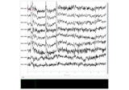

mne_icalabel.label_components#
- mne_icalabel.label_components(inst, ica, method)[source]#
Automatically label the ICA components with the selected method.
- Parameters
-
The data instance used to fit the ICA instance.
ica :
ICAThe fitted ICA instance.
method :
strThe proposed method for labeling components. Must be one of:
'iclabel'. - Returns
component_dict :
dictA dictionary with the following fields:
- ‘y_pred_proba’array of shape (n_components,)
Estimated predicted probability of the output class for each independent component.
- ‘labels’: list of shape (n_components,)
The corresponding string label of each class in ‘y_pred’.
Notes
For ICLabel model, the output classes are ordered:
‘brain’
‘muscle artifact’
‘eye blink’
‘heart beat’
‘line noise’
‘channel noise’
‘other’
Examples using mne_icalabel.label_components#

Repairing artifacts with ICA automatically using ICLabel Model
Repairing artifacts with ICA automatically using ICLabel Model